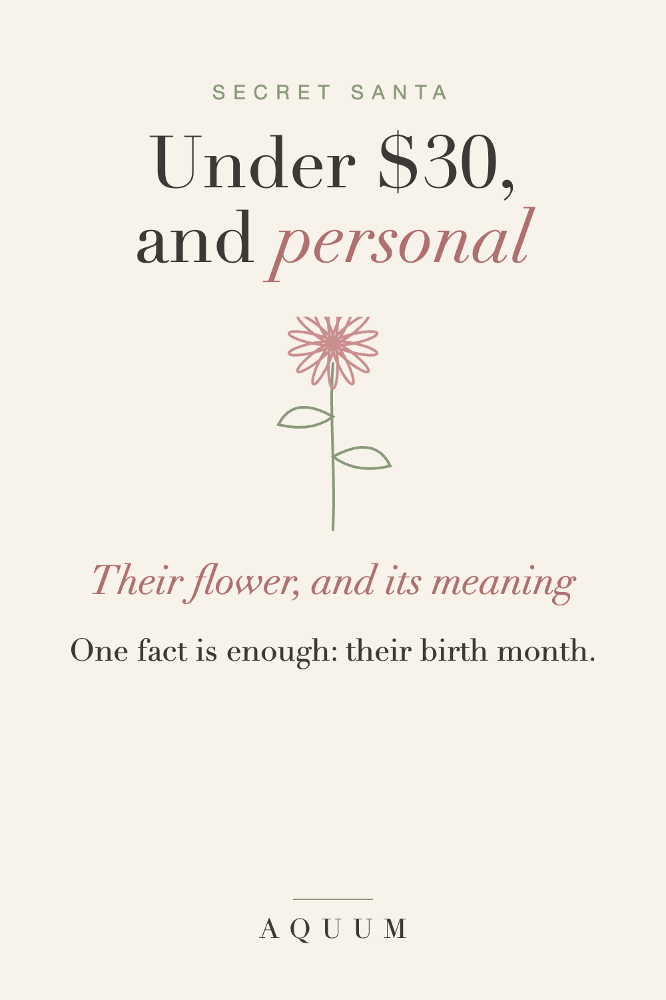

Secret Santa Gift Ideas Under $30 That Feel Personal
2026-09-30
Written by the team behind Aquum, a small birth flower gift shop. How we make money.

You drew a name. Maybe it's a coworker you like but barely know, maybe it's your sister-in-law's new boyfriend. The budget is $25 or $30, and the usual answer is a candle, a mug with a joke on it, or a gift card that says "I ran out of time."
Here's a way to make a small gift feel personal with almost no information.
The one fact you need
Find out their birth month. Ask the organizer, check the office birthday list, or ask a friend in common. That's enough to give a gift with their birth flower, which comes with its own meaning and says "I thought about you" in a way a generic gift can't.
Every month's flower and meaning is in what is my birth flower, or type their birthday into the birth flower finder.
Ideas under $30
- A shirt with their birth flower, soft enough to wear on weekends.
- A mug with their flower for the office coffee.
- A tote with their flower for the gym, the library or the farmers market.
- A framed print of their flower, or our free printable chart in a simple frame if you're under budget.
- Seeds or bulbs of their flower with a note about when to plant them.
What to write on the tag
Secret Santa is anonymous, so let the flower speak:
"Your birth flower is the aster. It means wisdom and patience. Merry Christmas from your Secret Santa."
If you don't know their birth month
Choose a flower for its meaning instead:
- Chrysanthemum: honest friendship. Safe for any coworker.
- Daisy: uncomplicated joy.
- Paperwhite: good wishes for what's ahead, perfect for the new year.
Order early
Made-to-order gifts take about a week to be made and shipped in the US, and the office party is usually earlier than Christmas. Check the date of the exchange and order two weeks before. More ideas are in our Christmas gift guide.